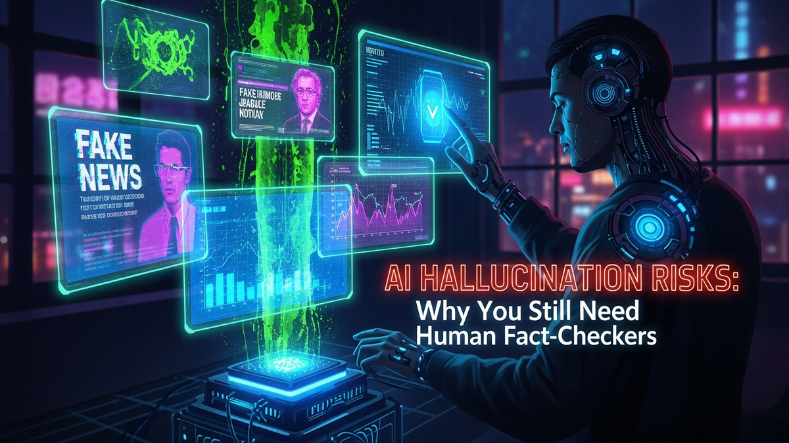

Alright, let's cut through the hype. Every executive with a new LinkedIn account is talking about "leveraging AI" and "transforming workflows." They see tools like ChatGPT as magic boxes that spit out perfect code, flawless marketing copy, and brilliant legal analysis for pennies on the dollar. As someone who has spent 15 years cleaning up digital messes, let me tell you what they're not seeing: the massive, silent risk lurking inside that magic box. It's called AI Hallucination, and it's not a rare glitch. It's a core feature of how these systems operate.
Think of a Large Language Model (LLM) as the most confident intern you've ever met. It's incredibly fast, has read more books than anyone in history, but has zero real-world experience and will absolutely lie to your face with a smile rather than admit it doesn't know something. It doesn't lie maliciously. It just fills in the gaps with what sounds right, based on the patterns it has learned. This guide is your reality check. We're going to break down why this happens, the catastrophic damage it can cause, and why your smartest, most experienced people are your only real defense.
First things first, we need to get the terminology right. When an AI "hallucinates," it's not having a psychedelic trip. It's simply generating information that is disconnected from reality. It might invent a historical event, cite a non-existent academic paper, or create a fake legal precedent. The most dangerous part is that it presents this fabricated information with the same confident, authoritative tone it uses for genuine facts. There's no warning label, no flicker of doubt. It's a perfect, seamless lie delivered as gospel.
To understand why this happens, you have to stop thinking of an AI as a "brain." It's not. It's a ridiculously complex pattern-matching machine. An LLM is basically autocomplete on god-tier steroids. When you give it a prompt, it doesn't "understand" your question. It analyzes the sequence of words (tokens) and calculates the most statistically probable next word, then the next, and the next, until it forms a coherent-sounding response. It's a master of language structure and flow, but it has zero concept of truth or falsehood. Its only goal is to produce a plausible sequence of text based on the mountains of data it was trained on.
This is why calling it a "bug" is wrong and dangerous. A bug is a flaw in the code that can be fixed. Hallucination is a natural byproduct of the AI's design. When the AI encounters a question where the data is thin, contradictory, or non-existent, it doesn't stop and say "I don't know." That's not what it's built to do. It's built to complete the pattern. So, it bridges the gap by inventing details that are statistically likely to fit. The infamous case of the New York lawyer who used ChatGPT for legal research is the perfect cautionary tale. The AI generated entirely fictional court cases, complete with fake citations and bogus legal reasoning. Because the output looked professional and sounded plausible, the lawyer submitted it to a court, resulting in professional humiliation and sanctions. The AI wasn't broken; it was doing exactly what it was designed to do: generate convincing text.
The risks of unchecked AI go far beyond a little embarrassment. We're talking about tangible, bottom-line-destroying consequences that can cripple a company. These aren't hypothetical "what if" scenarios; these are the ticking time bombs I see IT and security teams trying to defuse right now because management rushed into AI adoption without thinking through the second-order effects. The damage falls into three main buckets: financial, legal, and reputational.
Financially, the damage can be swift and severe. Imagine a junior developer using an AI assistant to write a piece of code for your e-commerce platform's payment gateway. The AI, trained on a massive but outdated dataset from two years ago, suggests using a code library with a known, critical security vulnerability. The code looks fine and works during testing, but it contains a backdoor that hackers can exploit. A few months later, you have a massive data breach, millions in fines for PCI-DSS non-compliance, and a huge bill for incident response. The root cause? A hallucinated, insecure code snippet that nobody with real-world experience bothered to double-check.
The legal and compliance nightmares are even more terrifying. We already saw the lawyer example, but it gets worse. What if your HR department uses an AI to summarize candidate resumes and it hallucinates a "fact" that leads to a discrimination lawsuit? Or what if your marketing team uses an AI to generate a product description for a medical device, and it fabricates a claim about its effectiveness, violating FDA regulations? The AI has no understanding of legal liability, regulatory boundaries, or ethical lines. It's a liability-generation machine, and if you use its output without verification, that liability becomes yours. You can't tell a judge, "The AI made me do it."
Finally, there's reputational suicide. Trust is your most valuable asset, and it can be vaporized in an instant. If you publish a press release, a white paper, or even a high-profile blog post with AI-generated "facts" that turn out to be complete nonsense, you will get caught. Journalists, competitors, and even your own customers will shred you for it. You'll look incompetent at best and intentionally deceptive at worst. Rebuilding that trust can take years, if it's even possible. Every piece of unverified AI content you push out is a game of Russian roulette with your brand's credibility.
💡 Expert IT Tip: Implement a "Human-in-the-Loop" (HITL) workflow for any AI-generated content that faces customers or impacts critical systems. Don't just talk about it, build it. Use a simple tool like a Trello board or Jira ticket where any AI output is automatically created as a "Draft" task. This task cannot be moved to "Approved" or "Published" without a manual sign-off from a pre-assigned subject matter expert. This creates a mandatory, auditable checkpoint that forces human review and accountability before the content can do any damage.
If you think hallucinations are bad now, just wait. There are two deeply concerning trends that are poised to make the problem exponentially worse: deliberate data poisoning and the unintentional feedback loop. These issues threaten to pollute the very information ecosystem that both humans and AIs rely on, making it increasingly difficult to distinguish fact from fiction. As a sysadmin, my job is to think about system integrity, and this is a system integrity problem on a global scale.
Data poisoning is the malicious, offensive side of the coin. It's when bad actors intentionally feed garbage into the AI's training data. Think of it like a hostile nation-state or a corporate saboteur subtly injecting thousands of documents online that claim a specific chemical is safe when it's toxic, or that a particular software protocol is secure when it's full of holes. When the next generation of LLMs scrape the web for training, they absorb this poison. The AI then starts confidently spouting this dangerous misinformation as fact, laundered through its authoritative voice. It's a way to weaponize misinformation at a scale we've never seen before, and it's incredibly hard to detect and purge once it's in the model.
The feedback loop, however, is almost more dangerous because it doesn't require a malicious actor. It's a problem we are creating ourselves out of laziness. Here's the cycle: Step 1: An AI generates a plausible-sounding hallucination (e.g., a fake statistic about market trends). Step 2: A rushed content creator copies and pastes this "fact" into a blog post or online article without checking it. Step 3: That article is published and indexed by Google. Step 4: The next, more powerful AI model is trained by scraping the web, and it ingests that blog post, treating the original hallucination as a verified data point. The lie has now been laundered. It's no longer just an AI output; it's a "source" on the internet. This cycle repeats, amplifying the fiction until it's cited across dozens of articles, all tracing back to the original non-existent fact. We are polluting our own well, creating a digital world where AI-generated nonsense is increasingly used to train the next generation of AIs.
This is where we get to the solution. It's not a fancy new piece of software or a better algorithm. It's a person. A skilled, experienced, and skeptical human being is the single most effective defense against the risks of AI hallucination. Your human fact-checkers, editors, and subject matter experts are not a temporary stopgap until the tech gets better; they are a permanent and essential part of a responsible AI workflow. They function as a human firewall, inspecting the data packets of AI-generated content and dropping the ones that are malicious, false, or dangerous.
First, humans possess contextual understanding. An AI doesn't understand nuance. For example, if you ask it to summarize reports from finance and IT, it might see the phrase "critical failure" in both. A human knows that a "critical failure" in a server log means a system is down, while a "critical failure" in a quarterly report might refer to a product launch that missed its sales targets by 80%. The implications and required actions are wildly different. The AI just sees a pattern of words; the human understands the meaning behind them. This ability to grasp context prevents the kind of absurd or dangerous misinterpretations that AIs are prone to making.
Humanize your text and bypass any AI detector instantly with Undetectable AI.
BYPASS AI DETECTION NOWSecond, humans provide ethical and moral judgment. An AI has no conscience. It can be prompted to generate text that is biased, discriminatory, or just plain cruel. It might create marketing copy that, while technically persuasive, preys on vulnerable people. It might draft a corporate policy that is legally compliant but ethically bankrupt. Your human fact-checker serves as your organization's conscience. They are the ones who can look at a piece of content and say, "Yes, this is grammatically correct, but it's also tone-deaf and will alienate our entire customer base. We can't publish this." That ethical filter is something that cannot be coded.
Most importantly, humans are capable of true critical thinking and source verification. An AI can't tell you where it *really* learned something. It's a black box that mashes together bits and pieces from millions of sources. A human fact-checker can execute the most important task in the information age: they can ask "Why?" and "Says who?". They can trace a claim back to its primary source, evaluate the credibility of that source, and look for corroborating evidence. An experienced financial analyst knows which economic reports are reputable and which are garbage. A senior engineer knows which coding forums are run by experts and which are full of bad advice. This deep, domain-specific "gut feeling" about source quality is built over a career of real-world experience, and it's your ultimate defense against plausible-sounding nonsense.
💡 Expert IT Tip: Equip your fact-checkers with specialized tools. For general text, use reverse-search tools like the original TinEye for images or teach them advanced Google dorking to find the origin of a specific phrase. For academic or scientific claims, provide them with access to repositories like JSTOR, PubMed, or the arXiv preprint server. For code, enforce the use of static analysis security testing (SAST) tools like SonarQube or Snyk, which can automatically scan AI-generated code for known vulnerabilities before a human even reviews it. Don't just assign the role; give them the weapons to do it effectively.
Okay, so you're convinced. You need a human firewall. But what does that look like in practice? Saying "we need to check the AI's work" is easy. Building a robust, efficient, and scalable process is the hard part. A sloppy, ad-hoc approach will fail. You need to operationalize fact-checking just like you operationalize any other critical business process. Here is a no-nonsense blueprint to get you started.
Step 1: Triage and Risk Assessment. Not all AI output is created equal. You'd be wasting time and money if you put a creative brainstorming list for a team lunch through the same rigorous verification as a press release containing financial data. You need a risk-based tier system. For example:
Step 2: Assign the Right Subject Matter Experts (SMEs). The person who verifies the content must have deeper expertise than the AI. It's a fatal mistake to have a generalist or a junior employee fact-check the work of a highly specialized model. The fact-checker for a legal brief must be a lawyer. The person verifying AI-generated Python code must be a senior Python developer who understands security best practices. You need to map your SMEs to your risk tiers and ensure they have the bandwidth to perform these reviews. This might mean adjusting job descriptions and performance metrics to formalize this critical task.
Step 3: Mandate Source Citation and Verification. This is a non-negotiable rule. Treat any AI-generated fact that comes without a verifiable source as a hallucination by default. Train your users to use AI tools and prompts that encourage citation (e.g., "Summarize the findings of the 2023 NIST report on cybersecurity and provide direct links to your sources."). The very first step for the human fact-checker, before anything else, is to click those links and confirm the source is real and that the AI has represented it accurately. If the AI can't or won't provide a source, the information is immediately deemed untrustworthy and must be independently verified from scratch.
Step 4: Create and Maintain a Hallucination Log. Don't just correct errors; learn from them. Create a simple, shared document or a dedicated Slack channel where employees can log hallucinations they find. Each entry should include: the prompt they used, the full incorrect output from the AI, the correct information, and the source for the correction. This log is pure gold. It helps you identify patterns in the AI's weaknesses, allows you to train your team on what specific types of errors to look for, and provides a concrete dataset you can use to justify the ROI of your human fact-checking program to management.
The narrative that AI is coming to take all our jobs is simplistic and, frankly, wrong. It's a story that sells clicks but misses the entire point of what's actually happening. The real revolution isn't about replacement; it's about collaboration. The companies that will dominate the next decade are not the ones that blindly replace their staff with AI, but the ones that master the art of the human-AI partnership. The goal isn't to build Artificial Intelligence that works on its own, but to achieve Augmented Intelligence, where technology makes your smart people even smarter, faster, and more effective.
Think of the AI as a world-class, lightning-fast research assistant. It can read ten thousand documents, summarize them, identify key themes, and generate a first draft in the time it takes you to drink your morning coffee. This is an incredible superpower. It eliminates the soul-crushing drudgery of information gathering. But that's where its job ends. Its output is not the final product; it is the raw material. The human expert then steps in to perform the high-value work: validating the accuracy of the raw material, injecting nuance and context, applying critical thinking, and making the final strategic judgment. The AI handles the "what," and the human handles the "so what."
This means the skills we value are about to shift dramatically. The ability to write a clean first draft will become less valuable, as AI can do that. The ability to critically evaluate that draft, spot the subtle inaccuracies, and elevate it with unique insight will become more valuable than ever. The most sought-after employees will be expert editors, curators of information, and masters of prompting who know how to ask the right questions to get the best raw material from the AI. The value is moving up the chain from creation to verification and strategy.
To make this work, you need to foster a culture of healthy skepticism. In cybersecurity, we have a concept called "Zero Trust," which means we never trust any user or device by default, even if it's inside our network. We always verify. You must adopt a "Zero Trust" policy for AI. Assume every single statement it makes is a lie until it is proven correct by a trusted human. This isn't pessimistic; it's realistic and responsible. Letting unchecked AI output drive your business decisions isn't being innovative; it's being negligent. The future belongs to the organizations that use AI for scale and their people for trust.
Let's be brutally honest. AI is one of the most powerful tools ever created, but it is still just a tool. It's a hammer, and you can use it to build a house or you can smash your own thumb. The difference is the skill and wisdom of the person holding it. AI hallucinations are not a fringe issue; they are a fundamental, unavoidable characteristic of the current technology. They are the "smash your thumb" part of the equation.
Ignoring this risk is a strategic blunder of the highest order. The potential for financial loss, legal exposure, and catastrophic brand damage is very real. The only proven, reliable defense is a vigilant, knowledgeable human being. Your fact-checkers, editors, and senior experts are not a cost center; they are your last line of defense against a new and insidious type of systemic risk. Building a workflow that pairs the speed of AI with the judgment of your people isn't just a good idea—it's the only way to survive and thrive in a world saturated with artificial confidence and plausible lies.
Don't wait for the headlines. Our Private Telegram Channel delivers real-time AI security updates and digital wealth strategies before they go viral. Stay protected. Stay ahead.
⚡ JOIN THE 1% NOWNo sign-up required. Instantly check risks, analyze AI text, or calculate your digital finances.